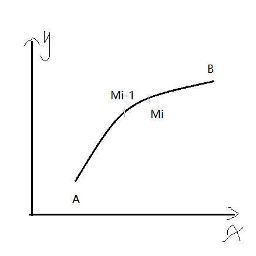
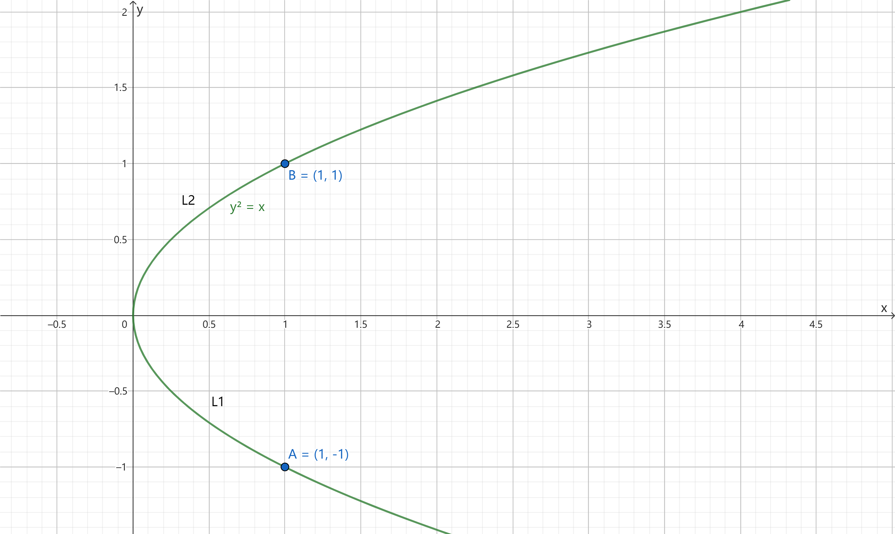
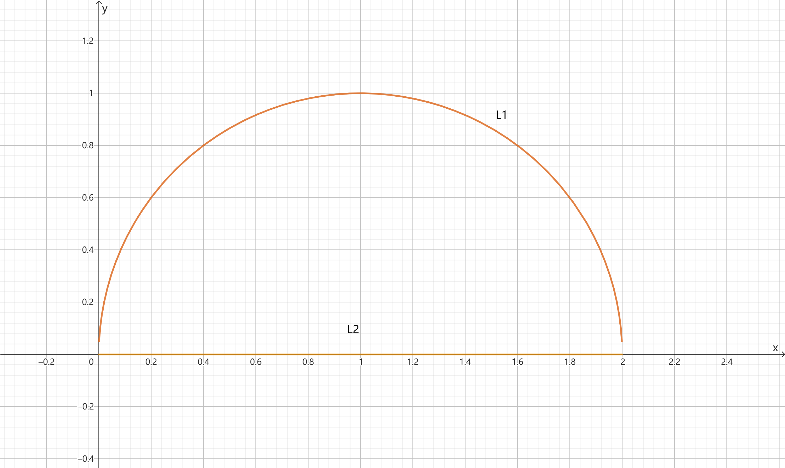
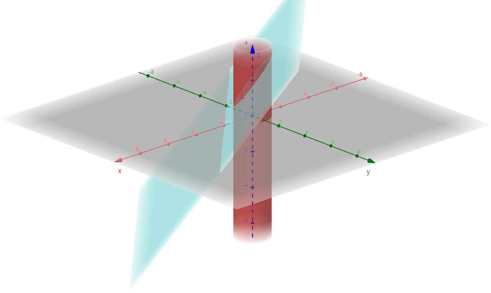
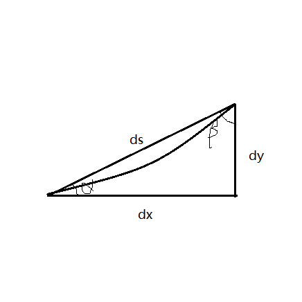

§ 10.2 \S10.2 §10.2 有向 积分） 引例：变力沿曲线做功

L : A → B L:A\to B L : A → B
F ⃗ ( x , y ) = P ( x , y ) i ⃗ + Q ( x , y ) j ⃗ = ( P ( ξ i , η i ) , Q ( ξ i , η i ) ) \begin{align*}
\vec{F}(x,y)&=P(x,y)\vec{i}+Q(x,y)\vec{j}\\
&=(P(\xi_i,\eta_i),Q(\xi_i, \eta_i))
\end{align*} F ( x , y ) = P ( x , y ) i + Q ( x , y ) j = ( P ( ξ i , η i ) , Q ( ξ i , η i ))
W i ≈ F i ⃗ ⋅ M i − 1 M i ⃗ = ( P i , Q i ) ⋅ ( Δ x i , Δ y i ) = P i Δ x i + Q i Δ y i \begin{align*}
W_i&\approx \vec{F_i}\cdot \vec{M_{i-1}M_i}\\
&=(P_i,Q_i)\cdot (\Delta x_i,\Delta y_i)\\
&=P_i\Delta x_i + Q_i\Delta y_i
\end{align*} W i ≈ F i ⋅ M i − 1 M i = ( P i , Q i ) ⋅ ( Δ x i , Δ y i ) = P i Δ x i + Q i Δ y i
W = lim λ → 0 ∑ n = 1 ∞ ( P i Δ x i + Q i Δ y i ) W=\displaystyle \lim_{\lambda \to 0}\sum_{n=1}^\infty (P_i\Delta x_i + Q_i\Delta y_i) W = λ → 0 lim n = 1 ∑ ∞ ( P i Δ x i + Q i Δ y i )
定义
设 L 为 xoy 平面内从 A 到 B 的一条有向光滑曲线，P(x,y)为定义在L上的有界函数，若对L任意分割和取点 ( ξ i , η i ) (\xi_i,\eta_i) ( ξ i , η i ) lim λ → 0 ∑ k = 1 n P ( ξ i , η i ) Δ x i \displaystyle \lim_{\lambda \to 0}\sum_{k=1}^nP(\xi_i,\eta_i)\Delta x_i λ → 0 lim k = 1 ∑ n P ( ξ i , η i ) Δ x i P ( x , y ) P(x,y) P ( x , y ) ∫ L P ( x , y ) d x \displaystyle \int_L P(x,y) \mathrm dx ∫ L P ( x , y ) d x ∫ L Q ( x , y ) d y = lim λ → 0 ∑ k = 1 n Q ( ξ i , η i ) Δ y i \displaystyle \int_L Q(x,y) \mathrm dy=\lim_{\lambda \to 0}\sum_{k=1}^nQ(\xi_i,\eta_i)\Delta y_i ∫ L Q ( x , y ) d y = λ → 0 lim k = 1 ∑ n Q ( ξ i , η i ) Δ y i
∫ L P ( x , y ) d x + Q ( x , y ) d y = ∫ L P ( x , y ) d x + ∫ L Q ( x , y ) d y = ∫ L F ⃗ ⋅ d l ⃗ \begin{align*}
\int_L P(x,y)\mathrm dx + Q(x,y) \mathrm dy &= \int_L P(x,y)\mathrm dx + \int_L Q(x,y) \mathrm dy\\
&=\int_L \vec{F}\cdot \mathrm d\vec{l}
\end{align*} ∫ L P ( x , y ) d x + Q ( x , y ) d y = ∫ L P ( x , y ) d x + ∫ L Q ( x , y ) d y = ∫ L F ⋅ d l
若 Γ \Gamma Γ
∫ Γ P ( x , y , z ) d x + ∫ Γ Q ( x , y , z ) d y + ∫ Γ R ( x , y , z ) d z = ∫ Γ F ⃗ ⋅ d l ⃗ \begin{align*}
\int_\Gamma P(x,y,z)\mathrm dx + \int_\Gamma Q(x,y,z) \mathrm dy + \int_\Gamma R(x,y,z)\mathrm dz = \int_\Gamma \vec{F}\cdot \mathrm d\vec{l}
\end{align*} ∫ Γ P ( x , y , z ) d x + ∫ Γ Q ( x , y , z ) d y + ∫ Γ R ( x , y , z ) d z = ∫ Γ F ⋅ d l
性质
若 L 可分成 k 条有向光滑曲线弧 L i ( i = 1 , 2 , ⋯ , k ) L_i(i=1,2,\cdots,k) L i ( i = 1 , 2 , ⋯ , k ) ∫ L P ( x , y ) d x + Q ( x , y ) d y = ∑ i = 1 k ∫ L i P ( x , y ) d x + Q ( x , y ) d y \int_L P(x,y)\mathrm dx + Q(x,y) \mathrm dy = \sum_{i=1}^k \int_{L_i} P(x,y) \mathrm dx + Q(x,y) \mathrm dy ∫ L P ( x , y ) d x + Q ( x , y ) d y = ∑ i = 1 k ∫ L i P ( x , y ) d x + Q ( x , y ) d y
∫ L ( a 1 p 1 + a 2 p 2 ) d x = a 1 ∫ L p 1 d x + a 2 ∫ L p 2 d x \int_L(a_1p_1+a_2p_2)\mathrm dx = a_1\int_L p_1 \mathrm dx + a_2\int_L p_2 \mathrm dx ∫ L ( a 1 p 1 + a 2 p 2 ) d x = a 1 ∫ L p 1 d x + a 2 ∫ L p 2 d x L : A → B ⇒ L − : B → A L:A\to B \Rightarrow L^-:B\to A L : A → B ⇒ L − : B → A ∫ L − P ( x , y ) d x + Q ( x , y ) d y = − ∫ L P ( x , y ) d x + Q ( x , y ) d y \int_{L^-}P(x,y)\mathrm dx + Q(x,y) \mathrm dy = -\int_L P(x,y)\mathrm dx + Q(x,y)\mathrm dy ∫ L − P ( x , y ) d x + Q ( x , y ) d y = − ∫ L P ( x , y ) d x + Q ( x , y ) d y
计算
定理：P ( x , y ) P(x,y) P ( x , y ) Q ( x , y ) Q(x,y) Q ( x , y ) L : { x = ϕ ( t ) y = ψ ( t ) , t : α → β L:\begin{cases}x=\phi(t)\\y=\psi(t)\end{cases},t:\alpha\to\beta L : { x = ϕ ( t ) y = ψ ( t ) , t : α → β ϕ ′ 2 ( t ) + ψ ′ 2 ( t ) ≠ 0 \phi'^2(t)+\psi'^2(t)\ne 0 ϕ ′2 ( t ) + ψ ′2 ( t ) = 0 ∫ L P d x + Q d y = ∫ α β [ P ( ϕ , ψ ) ϕ ′ + Q ( ϕ , ψ ) ψ ′ ] d t \int_LP \mathrm dx+Q \mathrm dy=\int_\alpha^\beta[P(\phi,\psi)\phi'+Q(\phi,\psi)\psi']\mathrm dt ∫ L P d x + Q d y = ∫ α β [ P ( ϕ , ψ ) ϕ ′ + Q ( ϕ , ψ ) ψ ′ ] d t
Γ : { x = ϕ ( t ) y = ψ ( t ) z = ω ( t ) \Gamma:\begin{cases}x=\phi(t)\\y=\psi(t)\\z=\omega(t)\end{cases} Γ : ⎩ ⎨ ⎧ x = ϕ ( t ) y = ψ ( t ) z = ω ( t ) ∫ Γ P d x + Q d y + R d z = ∫ α β [ P ( ϕ , ψ , ω ) ϕ ′ + Q ( ϕ , ψ , ω ) ψ ′ + R ( ϕ , ψ , ω ) ω ′ ] d t \int_\Gamma P \mathrm dx + Q \mathrm dy + R \mathrm dz =\int_\alpha^\beta [P(\phi,\psi,\omega)\phi'+Q(\phi,\psi,\omega)\psi'+R(\phi,\psi,\omega)\omega']\mathrm dt ∫ Γ P d x + Q d y + R d z = ∫ α β [ P ( ϕ , ψ , ω ) ϕ ′ + Q ( ϕ , ψ , ω ) ψ ′ + R ( ϕ , ψ , ω ) ω ′ ] d t L : y = ϕ ( x ) , x : a → b L:y=\phi(x), x:a\to b L : y = ϕ ( x ) , x : a → b ∫ L P d x + Q d y = ∫ a b [ P ( x , ϕ ( x ) ) ⋅ 1 + Q ( x , ϕ ( x ) ) ϕ ′ ( x ) ] d x \int_L P \mathrm dx + Q \mathrm dy = \int_a^b[P(x,\phi(x))\cdot 1+Q(x,\phi(x))\phi'(x)]\mathrm dx ∫ L P d x + Q d y = ∫ a b [ P ( x , ϕ ( x )) ⋅ 1 + Q ( x , ϕ ( x )) ϕ ′ ( x )] d x
L 1 : y = a , x : b → c L_1:y=a, x:b\to c L 1 : y = a , x : b → c ∫ L 1 P d x + Q d y = ∫ b c P ( x , a ) ⋅ 1 + Q ( x , a ) ⋅ 0 d x = ∫ b c P ( x , a ) d x \int_{L_1}P \mathrm dx + Q \mathrm dy = \int_b^cP(x,a)\cdot 1+Q(x,a)\cdot 0 \mathrm dx = \int_b^cP(x,a)\mathrm dx ∫ L 1 P d x + Q d y = ∫ b c P ( x , a ) ⋅ 1 + Q ( x , a ) ⋅ 0 d x = ∫ b c P ( x , a ) d x
L : x = ψ ( y ) , y : c → d L:x=\psi(y), y:c\to d L : x = ψ ( y ) , y : c → d ∫ L P d x + Q d y = ∫ c d [ P ( ψ ( y ) , y ) d ψ ′ ( y ) + Q ( ψ ( y ) , y ) ⋅ 1 ] d y \int_L P \mathrm dx + Q \mathrm dy=\int_c^d[P(\psi(y),y)\mathrm d\psi'(y)+Q(\psi(y),y)\cdot 1] \mathrm dy ∫ L P d x + Q d y = ∫ c d [ P ( ψ ( y ) , y ) d ψ ′ ( y ) + Q ( ψ ( y ) , y ) ⋅ 1 ] d y
L 2 : x = d , y : m → n L_2:x=d, y:m\to n L 2 : x = d , y : m → n ∫ L 2 P d x + Q d y = ∫ m n Q ( d , y ) d y \int_{L_2}P \mathrm dx + Q \mathrm dy = \int_m^n Q(d,y)\mathrm dy ∫ L 2 P d x + Q d y = ∫ m n Q ( d , y ) d y
例题
I = ∫ L x y d x I=\int_L xy \mathrm dx I = ∫ L x y d x L : y 2 = x [ ( 1 , − 1 ) → ( 1 , 1 ) ] L:y^2=x\quad[(1,-1)\to(1,1)] L : y 2 = x [( 1 , − 1 ) → ( 1 , 1 )]

解：
法1：l 1 : y = − x x : 1 → 0 l_1:y=-\sqrt{x}\quad x:1\to 0 l 1 : y = − x x : 1 → 0 l 2 : y = x x : 0 → 1 l_2:y=\sqrt{x}\quad x:0\to 1 l 2 : y = x x : 0 → 1 I = ∫ L 1 x y d x + ∫ L 2 x y d x = ∫ 1 0 x ( − x ) ⋅ 1 d x + ∫ 0 1 x x ⋅ 1 d x = 4 5 \begin{align*}
I&=\int_{L_1}xy \mathrm dx + \int_{L_2}xy \mathrm dx\\
&=\int_1^0x(-\sqrt{x})\cdot 1 \mathrm dx + \int_0^1 x\sqrt{x}\cdot 1 \mathrm dx\\
&=\dfrac{4}{5}
\end{align*} I = ∫ L 1 x y d x + ∫ L 2 x y d x = ∫ 1 0 x ( − x ) ⋅ 1 d x + ∫ 0 1 x x ⋅ 1 d x = 5 4
法2：L : x = y 2 y : − 1 → 1 L:x=y^2\quad y:-1\to 1 L : x = y 2 y : − 1 → 1 I = ∫ − 1 1 y 2 ⋅ y ⋅ 2 y d y = ∫ − 1 1 y 4 d y = 4 5 \begin{align*}
I&=\int_{-1}^1y^2\cdot y\cdot 2y \mathrm dy\\
&=\int_{-1}^1y^4 \mathrm dy\\
&=\dfrac{4}{5}
\end{align*} I = ∫ − 1 1 y 2 ⋅ y ⋅ 2 y d y = ∫ − 1 1 y 4 d y = 5 4
I = ∮ x y d x I=\oint xy \mathrm dx I = ∮ x y d x L : ( x − a ) 2 + y 2 = a 2 L:(x-a)^2+y^2=a^2 L : ( x − a ) 2 + y 2 = a 2 a > 0 a\gt 0 a > 0 y > 0 y\gt 0 y > 0

解：L 1 : { x = a + a cos t y = a sin t t : 0 → π L_1:\begin{cases}x=a+a\cos t\\y=a\sin t\end{cases}\quad t:0\to \pi L 1 : { x = a + a cos t y = a sin t t : 0 → π L 2 : y = 0 , x : 0 → 2 a L_2:y=0,x:0\to 2a L 2 : y = 0 , x : 0 → 2 a
I = ∫ L 1 x y d x + ∫ L 2 x y d x = ∫ 0 π ( a + a cos t ) a sin t ( − a sin t ) d t + ∫ 0 2 a x ⋅ 0 d x = − π a 3 2 \begin{align*}
I&=\int_{L_1}xy \mathrm dx + \int_{L_2}xy \mathrm dx\\
&=\int_0^\pi(a+a\cos t)a\sin t(-a\sin t)\mathrm dt + \int_0^{2a}x\cdot 0 \mathrm dx\\
&=-\dfrac{\pi a^3}{2}
\end{align*} I = ∫ L 1 x y d x + ∫ L 2 x y d x = ∫ 0 π ( a + a cos t ) a sin t ( − a sin t ) d t + ∫ 0 2 a x ⋅ 0 d x = − 2 π a 3
∫ L 2 x y d x − ( 3 x + y ) d y \int_L 2xy \mathrm dx - (3x+y) \mathrm dy ∫ L 2 x y d x − ( 3 x + y ) d y L : ( 0 , 0 ) → ( 1 , 1 ) L:(0,0)\to (1,1) L : ( 0 , 0 ) → ( 1 , 1 )
y = x 2 y=x^2 y = x 2
x : 0 → 1 , d y = 2 x d x x:0\to 1, \mathrm dy = 2x \mathrm dx x : 0 → 1 , d y = 2 x d x I = ∫ 0 1 [ 2 x ⋅ x 2 ⋅ 1 − ( 3 x + x 2 ) ⋅ 2 x ] d x = − 2 I=\int_0^1[2x\cdot x^2 \cdot 1-(3x+x^2)\cdot 2x]\mathrm dx=-2 I = ∫ 0 1 [ 2 x ⋅ x 2 ⋅ 1 − ( 3 x + x 2 ) ⋅ 2 x ] d x = − 2
x = y 2 x=y^2 x = y 2
y : 0 → 1 , d x = 2 y d y y:0\to 1, \mathrm dx = 2y \mathrm dy y : 0 → 1 , d x = 2 y d y I = ∫ 0 1 [ 2 y 2 ⋅ y ⋅ 2 y − ( 3 y 2 + y ) ⋅ 1 ] d y = − 7 10 I=\int_0^1[2y^2\cdot y \cdot 2y-(3y^2+y)\cdot 1]\mathrm dy=-\dfrac{7}{10} I = ∫ 0 1 [ 2 y 2 ⋅ y ⋅ 2 y − ( 3 y 2 + y ) ⋅ 1 ] d y = − 10 7
( 0 , 0 ) → ( 0 , 1 ) → ( 1 , 1 ) (0,0)\to (0,1)\to (1,1) ( 0 , 0 ) → ( 0 , 1 ) → ( 1 , 1 )
L 1 : x = 0 , y : 0 → 1 L_1:x=0,y:0\to 1 L 1 : x = 0 , y : 0 → 1 L 2 : y = 1 , x : 0 → 1 L_2:y=1,x:0\to 1 L 2 : y = 1 , x : 0 → 1 I = I L 1 + I L 2 = ∫ 0 1 [ 2 ⋅ 0 ⋅ y ⋅ 0 − ( 3 ⋅ 0 + y ) ] d y + ∫ 0 1 [ 2 x ⋅ 1 − ( 3 x + 1 ) ⋅ 0 ] d x = − 1 2 + 1 = 1 2 I=I_{L_1}+I_{L_2}=\int_0^1[2\cdot 0 \cdot y \cdot 0-(3\cdot 0+y)]\mathrm dy + \int_0^1[2x\cdot 1-(3x+1)\cdot 0]\mathrm dx=-\dfrac{1}{2}+1=\dfrac{1}{2} I = I L 1 + I L 2 = ∫ 0 1 [ 2 ⋅ 0 ⋅ y ⋅ 0 − ( 3 ⋅ 0 + y )] d y + ∫ 0 1 [ 2 x ⋅ 1 − ( 3 x + 1 ) ⋅ 0 ] d x = − 2 1 + 1 = 2 1
∫ Γ x y d x + y z d y + z x d z \int_\Gamma xy \mathrm dx + yz \mathrm dy + zx \mathrm dz ∫ Γ x y d x + yz d y + z x d z Γ : A ( 3 , 2 , 1 ) → B ( 0 , 0 , 0 ) \Gamma: A(3,2,1)\to B(0,0,0) Γ : A ( 3 , 2 , 1 ) → B ( 0 , 0 , 0 )
解：A B ⃗ \vec{AB} A B
x − 0 3 − 0 = y − 0 2 − 0 = z − 0 1 − 0 = t \begin{align*}
\dfrac{x-0}{3-0}=\dfrac{y-0}{2-0}=\dfrac{z-0}{1-0}=t
\end{align*} 3 − 0 x − 0 = 2 − 0 y − 0 = 1 − 0 z − 0 = t
即
{ x = 3 t y = 2 t z = t t = 1 → 0 \begin{align*}
\begin{cases}
x=3t\\
y=2t\\
z=t
\end{cases}\quad t=1\to 0
\end{align*} ⎩ ⎨ ⎧ x = 3 t y = 2 t z = t t = 1 → 0
I = ∫ 1 0 [ 3 t ⋅ 2 t ⋅ 3 + 2 t ⋅ t ⋅ 2 + t ⋅ 3 t ⋅ 1 ] d t = − 25 3 \begin{align*}
I&=\int_1^0[3t\cdot 2t\cdot 3+2t\cdot t\cdot 2+t\cdot 3t\cdot 1]\mathrm dt\\
&=-\dfrac{25}{3}
\end{align*} I = ∫ 1 0 [ 3 t ⋅ 2 t ⋅ 3 + 2 t ⋅ t ⋅ 2 + t ⋅ 3 t ⋅ 1 ] d t = − 3 25
∫ Γ ( z − y ) d x + ( x − z ) d y + ( x − y ) d z \int_\Gamma (z-y)\mathrm dx + (x-z)\mathrm dy + (x-y)\mathrm dz ∫ Γ ( z − y ) d x + ( x − z ) d y + ( x − y ) d z Γ : { x 2 + y 2 = 1 x − y + z = 2 \Gamma: \begin{cases}x^2+y^2=1\\x-y+z=2\end{cases} Γ : { x 2 + y 2 = 1 x − y + z = 2

解：Γ : { x = cos t y = sin t z = 2 − cos t + sin t t : 2 π → 0 \Gamma: \begin{cases}x=\cos t\\y=\sin t\\z=2-\cos t+\sin t\end{cases}\quad t:2\pi \to 0 Γ : ⎩ ⎨ ⎧ x = cos t y = sin t z = 2 − cos t + sin t t : 2 π → 0
I = ∫ 2 π 0 { ( 2 − cos t + sin t − sin t ) ( − sin t ) + [ cos t − ( 2 − cos t + sin t ) ] cos t + ( cos t − sin t ) ( sin t + cos t ) } d t = − 2 π \begin{align*}
I&=\int_{2\pi}^0\{(2-\cos t+\sin t-\sin t)(-\sin t)+[\cos t-(2-\cos t+\sin t)]\cos t+(\cos t-\sin t)(\sin t+\cos t)\}\mathrm dt\\
&=-2\pi
\end{align*} I = ∫ 2 π 0 {( 2 − cos t + sin t − sin t ) ( − sin t ) + [ cos t − ( 2 − cos t + sin t )] cos t + ( cos t − sin t ) ( sin t + cos t )} d t = − 2 π
∫ L ( − y ) d x x d y \int_L(-y)\mathrm dx _ x \mathrm dy ∫ L ( − y ) d x x d y L : x 2 + y 2 = a 2 ( a > 0 ) L:x^2+y^2=a^2(a\gt 0) L : x 2 + y 2 = a 2 ( a > 0 ) y ≥ 0 y\ge 0 y ≥ 0
解：
法1：{ x = a cos t y = a sin t t : π → 0 \begin{cases}x=a\cos t\\y=a\sin t\end{cases}\quad t:\pi\to 0 { x = a cos t y = a sin t t : π → 0 I = ∫ π 0 [ ( − a sin t ) ⋅ ( − a sin t ) + a cos t ⋅ a cos t ] d t = a 2 ∫ π 0 d t = − π a 2 I=\int_\pi^0[(-a\sin t)\cdot (-a\sin t)+a\cos t\cdot a\cos t]\mathrm dt=a^2\int_\pi^0 \mathrm dt = -\pi a^2 I = ∫ π 0 [( − a sin t ) ⋅ ( − a sin t ) + a cos t ⋅ a cos t ] d t = a 2 ∫ π 0 d t = − π a 2
法2：I = ∫ L ( − y cos α + x cos β ) d s I=\int_L(-y\cos \alpha+x\cos\beta)\mathrm ds I = ∫ L ( − y cos α + x cos β ) d s
cos α = − a sin t a 2 sin 2 t + a 2 cos 2 t = sin t = y a \cos\alpha=\dfrac{-a\sin t}{\sqrt{a^2\sin^2t+a^2\cos^2t}}=\sin t=\dfrac{y}{a} cos α = a 2 sin 2 t + a 2 cos 2 t − a sin t = sin t = a y cos β = − a cos t a = − cos t = − x a \cos\beta=-\dfrac{a\cos t}{a}=-\cos t=-\dfrac{x}{a} cos β = − a a cos t = − cos t = − a x 故原式 = − 1 a ∫ L ( x 2 + y 2 ) d s = − a ∫ L d s = − π a 2 =-\dfrac{1}{a}\int_L(x^2+y^2)\mathrm ds=-a\int_L \mathrm ds = -\pi a^2 = − a 1 ∫ L ( x 2 + y 2 ) d s = − a ∫ L d s = − π a 2
两类曲线积分的关系

[ 有向 L ] ∫ L P d x + Q d y = [ 无向 L ] ∫ L ( P cos α + Q cos β ) d s [有向L]\int_LP \mathrm dx+Q \mathrm dy=[无向L]\int_L(P\cos \alpha+Q\cos \beta)\mathrm ds [ 有向 L ] ∫ L P d x + Q d y = [ 无向 L ] ∫ L ( P cos α + Q cos β ) d s
d x = cos α d s \mathrm dx = \cos\alpha \mathrm ds d x = cos α d s cos α = d x d s = ± ϕ ′ ϕ ′ 2 + ψ ′ 2 \cos\alpha=\dfrac{\mathrm dx}{\mathrm ds}=\pm \dfrac{\phi'}{\sqrt{\phi'^2+\psi'^2}} cos α = d s d x = ± ϕ ′2 + ψ ′2 ϕ ′ d y = cos β d s \mathrm dy=\cos\beta \mathrm ds d y = cos β d s cos β = d y d s = ± ψ ′ ϕ ′ 2 + ψ ′ 2 \cos\beta=\dfrac{\mathrm dy}{\mathrm ds}=\pm \dfrac{\psi'}{\sqrt{\phi'^2+\psi'^2}} cos β = d s d y = ± ϕ ′2 + ψ ′2 ψ ′ d s = ϕ ′ 2 + ψ ′ 2 ∣ d t ∣ \mathrm ds=\sqrt{\phi'^2+\psi'^2}|\mathrm dt| d s = ϕ ′2 + ψ ′2 ∣ d t ∣
t : α → β { α ≤ β 取“ + ” α ≥ β 取“ − ” t:\alpha\to\beta\quad \begin{cases}\alpha\le\beta\quad 取“+”\\\alpha\ge\beta\quad取“-”\end{cases} t : α → β { α ≤ β 取 “ + ” α ≥ β 取 “ − ”